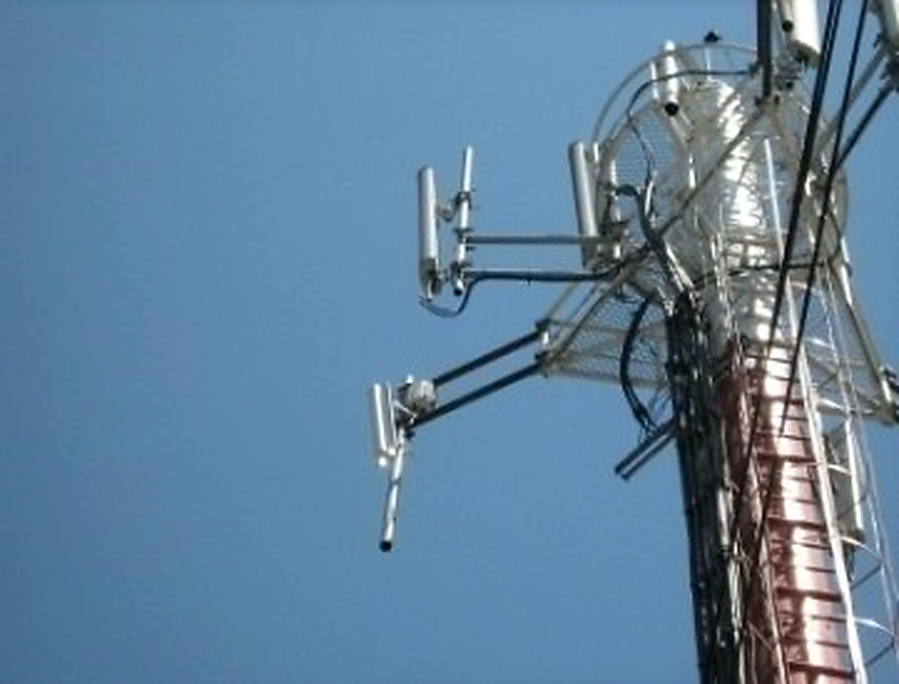
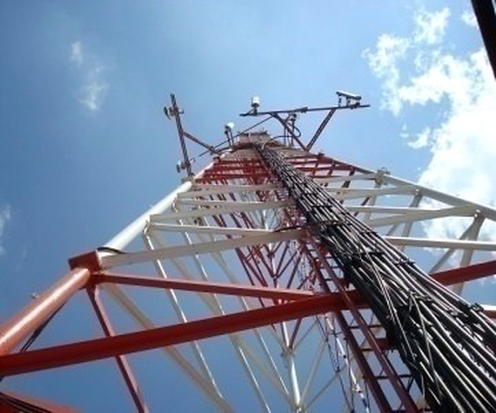
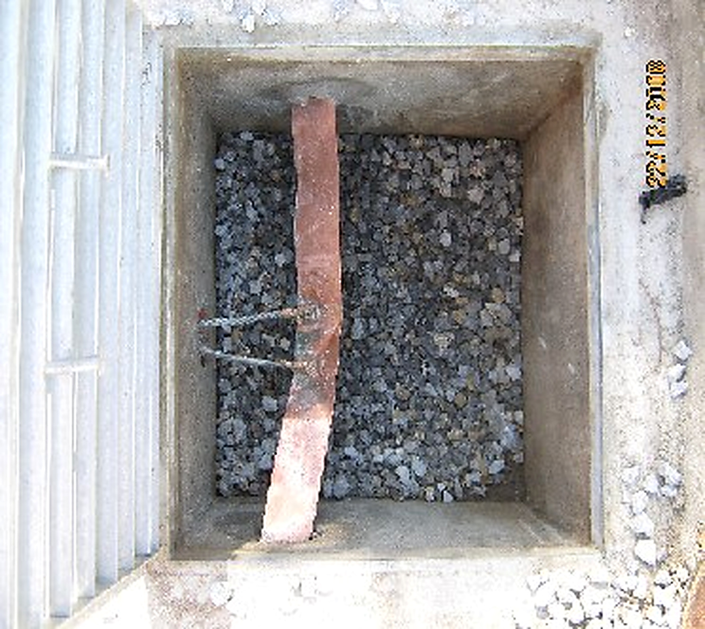

01 / Telecomunicaciones
Instalación de equipos
Instalación, configuración y certificación de equipos de transmisión, radio bases, enlaces y sistemas de comunicación.
ISETEL brinda servicios especializados en telecomunicaciones, transmisión, energía e infraestructura, con personal capacitado y comprometido con la calidad de cada proyecto.
Desde los estudios previos y la instalación hasta la puesta en servicio y el mantenimiento preventivo y correctivo.

Instalación, configuración y certificación de equipos de transmisión, radio bases, enlaces y sistemas de comunicación.

Mantenimiento preventivo y correctivo, optimización, desmontaje, traslado y soporte de infraestructura de telecomunicaciones.

Obras para sitios de telecomunicaciones, sistemas de tierra, instalaciones eléctricas y respaldo de energía AC - DC.
Tenemos el gusto de presentar nuestra empresa con el afán de brindar soluciones a sus proyectos. Trabajamos comprometidos con el profesionalismo que cada servicio requiere, buscando analizar y superar las expectativas de nuestros clientes.
Somos una empresa creada para prestar servicios en telecomunicaciones, especializada en equipos Ericsson y Huawei, además de trabajar con tecnologías de diferentes fabricantes.
Conozca más sobre ISETEL →
Capacidades descritas en la presentación corporativa de ISETEL.
Enlaces PDH, SDH e IP, multiplexores, sistemas SCPC y multiportadoras.
Instalación y mantenimiento de equipos GSM, WCDMA, 2G y 3G.
Rectificadores, bancos de baterías y sistemas de respaldo de energía.
Cimentaciones, losas, shelters, montaje, mantenimiento y desmontaje de torres.
La presentación corporativa de ISETEL describe trabajos realizados en Guatemala y Costa Rica.
Las cifras corresponden a los proyectos descritos en el documento corporativo proporcionado y no representan necesariamente contratos vigentes.
Conozca algunas imágenes de equipos e instalaciones incluidas en la presentación institucional.
Ver galería de proyectos →

